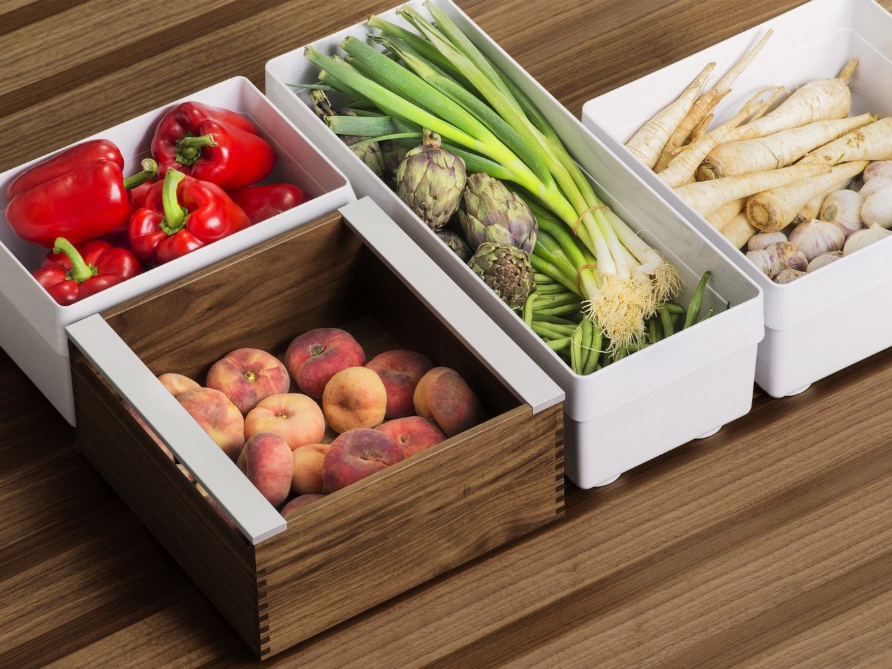

Урожай мало вырастить - надо его еще и сохранить, и сохранить правильно, что бы сберечь в нем максимум витаминов и полезных веществ. Ниже предлагаемая статья содержит несколько полезных советов в плане сохранения урожая. Кроме консервирования и сушки, часть урожая хранится в естественном виде. В частности - корнеплоды (картофель, морковь, свекла, тыква и пр.) или фрукты (яблоки). Обычно их хранят в погребе, в котором естественным образом поддерживаются оптимальные условия хранения – довольно высокая влажность ( 90-95%) и температура около 0 - +2 градусов. При меньшей влажности плоды быстро начинают подсыхать.
Подготовка погреба.
Прежде всего, погреб осенью следует подготовить к зимней «работе». В начале осени имеются оптимальные условия для интенсивного проветривания погреба. Если весной и летом проветривать погреб надо весьма осторожно, поскольку в нем холодно и если обеспечить сильный приток свежего воздуха, по влага в нем содержащаяся конденсируется в погребе, как правило на потолке. И в погребе появляется капель с потолка. Осенью же воздух уже прохладный, а погреб наоборот, прогрет за лето до 12-14 градусов. Поэтому конденсата в погребе не образуется и проветрить его можно безболезненно.
Прежде всего следует обеззаразить стены погреба. Если они обложены кирпичом, то можно их побелить свежей побелкой на основе извести. Неплохо в раствор извести добавить 3-5% раствор медного купороса. Если же в погребе имеются деревянные элементы (стены, перекрытия, стеллажи), то их так же надо опрыскать 5-10% раствором медного купороса. Делается это с помощью обычного садового опрыскивателя. После опрыскивания надо высушить погреб путем интенсивного вентилирования.
Весьма полезно будет сжечь в погребе пару серных шашек. Сернистый газ убьет всех насекомых, которые могли затаиться в щелях, грызунов, если таковые имеются. Серные шашки продаются в садово-огородных отделах хозяйственных магазинах. Шашку зажигают в погребе, на металлической подложке и быстро закрывают погреб. Через сутки – двое погреб проветривают.
Если ваш погреб подвержен промерзанию и находится под неотапливаемым домом, то есть смысл утеплить его надземную часть или ту часть стен, которая находится на уровне промерзания грунта. Для этого на стены наклеиваются листы пенополистирола. В качестве клея может служить либо специальный клей, либо монтажная пена. Эта несложная операция значительно утеплит погреб и убережет овощи и фрукты от замораживания.
Хранение овощей.
Овощи в погребе хранят обычно навалом, в небольших бункерах или ящиках. Но для этого и сами овощи следует подготовить. Перво-наперво надо овощи рассортировать. Овощи с даже малейшими повреждениями следует использовать в пищу в первую очередь. А для этого они должны укладываться сверху.
Если в погребе излишняя влажность, то для того что бы от нее избавиться следует разместить в нем какой либо влагопоглотитель. Например, купить 10-15 кг. соли и насыпать ее в широкий пластиковый поддон. Или внести в погреб несколько красных кирпичей. Разумеется, вначале следует устранить источник поступления влаги.
Хранение картофеля и корнеплодов.
Корнеплоды после уборки очищают от земли, слегка подсушивают и закаляют на свету в течении 1-2 дней. Закладываться на хранение следует только сухие клубни или корнеплоды. Картофель желательно рассортировать по размеру и сразу отобрать семенной картофель. Семенной картофель закаляют на свету 2 недели. При этом в нем вырабатывается ядовитое вещество - солонин (он придает кожуре картофеля зеленоватый оттенок). В пищу такой картофель уже не пригоден, но зато прекрасно хранится и не поражается гнилью и грызунами.
Пищевой картофель укладывают слоем не более 1 метра, стараясь не слишком «бить» клубни при укладке. Крупный картофель хранится хуже мелкого, поэтому идет в пищу в первую очередь.
Морковь и свеклу лучше всего хранить в ящиках с едва влажноватым песком. Но редко кто из дачников идет на такие ухищрения. Поэтому их зачастую хранят так же как и картофель – навалом в ящиках. Кстати, у моркови, свеклы, зимнего редиса, дайкона, и т.п. при уборке надо оставлять примерно 1,5-2 см. зеленого «хвостика». Это почему то значительно улучшает лёжкость корнеплодов.
Хранение капусты.
При уборке капусты их тщательно осматривают и сортируют. Поврежденную капусту (вредителями, болезнями или механически) желательно отправить на переработку (засолку, закваску). А на зимнее хранение оставляют только отборные кочаны, не обрывая с них никаких листьев. Капусту хранят навалом, допускается в несколько слоев, при условии бережной укладки.
Хранение тыкв, кабачков и баклажанов.
Кабачки и тыквы следует хранить в прохладных (но не холодных) помещениях. Хотя они прекрасно хранятся и в комнатных условиях, если на их кожице нет повреждений и их не беспокоят во время хранения. Я лично хранил тыквы более года в комнате.
Хранение и дозаривание помидоров.
В условиях средней полосы с наступлением холодной осенней и дождливой погоды на кустах томата остается много невызревших плодов. Зеленые помидоры даже в консервированном виде представляют собой весьма малоценный продукт, поэтому это обстоятельство следует использовать для продления сроков хранения свежих помидоров до декабря, а иногда и до января. Во время хранения помидоры и дозревают.
Для дозаривания готовят ящики (картонные или деревянные) и насыпают на дно абсолютно сухие опилки или стружку. Иногда используют сухое сено или солому. Уложив на опилки помидоры (самые незрелые), их засыпают опилками так, что бы их не было видно и укладывают следующий слой томатов, неплотно. И так – 4-5 слоев. Излишне напоминать, что дозаривают только абсолютно здоровые плоды, без трещин, следов фитофторы, ушибов и вмятин. Ящики ставят в прохладное сухое место (+ 15 градусов). И по мере надобности переносят в более теплое помещение, где помидоры быстро краснеют и спеют.
Хранение яблок.
На зимнее хранение закладывают зимние и поздне-осенние сорта яблок. На продолжительность хранения влияет прежде всего правильность сбора яблок. Дело в том, что в естественных условиях, яблоки покрыты тончайшим слоем т.н. «воска», он виден невооруженным глазом как седоватый налет. Этот воск является хорошим антибактериальным средством и предохраняет яблоки от быстрого загнивания. Поэтому очень важно максимально сохранить этот защитный слой. Выполнить это несложно.
Во-первых, рекомендации хранить яблоки завернутыми в газеты или бумагу, можно считать «вредными советами», так как при заворачивании яблока вы неизбежно повредите этот защитный слой. Хранить яблоки надо так же как и помидоры при дозаривании – в ящиках с сухими опилками или стружкой.
Во-вторых, чем меньше вы будете перекладывать яблоки при уборке, тем лучше. Поэтому сорванное яблоко следует сразу укладывать в ящик для хранения. «Сразу» - это значит - сорвал – положил в ящик со стружкой. Никаких промежуточных кантований, пересыпаний!
В третьих, уборку яблок следует вести в мягких тряпичных перчатках, а не голыми руками! Воск с первых сорванных яблок остается на перчатках и в дальнейшем воск на яблоках как бы контактирует с воском на перчатках и практически не повреждается. Следует избегать применения различных плодосъемников, повреждающих как сами яблоки, так и их защитный слой.
Закладывайте на хранение только абсолютно здоровые яблоки и таким способом, в прохладном и в меру влажном погребе яблоки можно сохранить до мая (если не съедаются раньше). Хотя витаминов в них остается немного, но это все же лучше чем ничего во время весеннего авитаминоза.
Константин Тимошенко